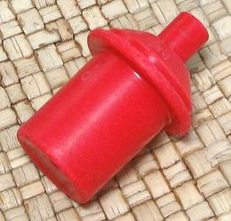
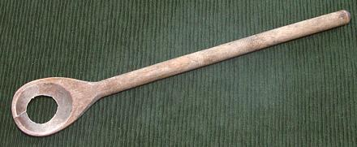
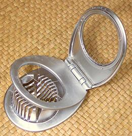
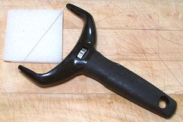

Egg Tools - Piercer / Spoon / Slicer / Cutter
Egg Piercer

This is used to make tiny invisible holes in the air pocket end of eggs.
This relieves air pressure as the egg heats up when you hard boil it.
This is particularly good if it has invisible cracks which would open
under pressure and spew egg out into the water, or for keeping older eggs
with a large air pockets from exploding. It has no significant effect on
peelability.
This device, purchased from Crate and Barrel more than 40 years ago,
(before they went all upscale and yuppie) has a spring which drives a
needle when you push the button. The needle projects out less than 1/8
inch. There are much fancier models sold today, at very variable prices,
but I won't buy one until this one stops working.
You can also pierce eggs with a regular large needle, with some duct
tape wrapped around the blunt end so you can get a grip on it.
More on Kitchen Gear.
Egg Spoon

This device is a very useful device
for removing eggs from hot water, securely and without bringing along
any hot water. It is also very useful for boosting Tomatoes out of their
scalding water to be quenched and peeled. I consider it an almost
essential kitchen tool.
These are not easy to find. When searching on the Internet, look for
"wooden egg spoon", as metal and plastic egg spoons are for eating
soft boiled eggs with.
More on Kitchen Gear.
Egg Slicer

Slicing eggs with a knife is an
exercise in frustration. The eggs stick to the sides of the knife, the
yolks smear and crumble, and the whites break. The wires of the
Egg Slicer have no sides to stick to. It cuts eggs into slices
or wedges without difficulty or mess. This one came from Bed Bath and
Beyond, sometime around 2009.
More on Kitchen Gear.
Wire Egg Cutter

Sometimes the Egg Slicer just
doesn't cut the way you want, particularly cutting in half lengthwise
for stuffing, or cutting quarter wedges. This photo shows my
Egg Cutter. It was sold as an adjustable Cheese Slicer, but I
broke out all the adjusting parts. It slices eggs so very neatly, so
long as you keep the wire clean. The white pad is to hold the egg up
1/8 inch off the board so the wire will cut all the way through.
More on Kitchen Gear.
ke_eggprc 150221 r 151203 - www.clovegarden.com
©Andrew Grygus - agryg@clovegaden.com
Photos on this
page not otherwise credited are © cg1 -
Linking to and non-commercial use of this page permitted